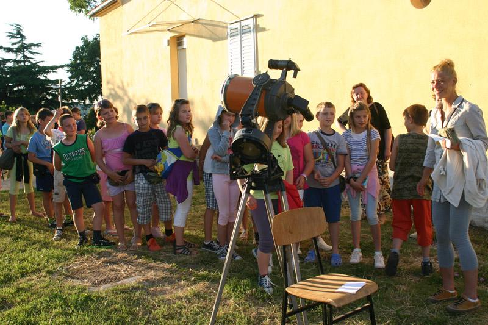

Visita l'Osservatorio di Pola
Affinché la Società Astronomica "Istra" possa svolgere con successo la sua attività fondamentale, la divulgazione dell'astronomia e delle altre scienze affini, all'Osservatorio di Pola vengono organizzate visite per individui e gruppi interessati.
Nota importante: Per il momento, la visita all'Osservatorio è possibile esclusivamente su prenotazione.
Cosa vi aspetta
A seconda dell'età dei visitatori, la visita include generalmente:

Presentazione multimediale sull'universo
Una presentazione sull'universo adattata all'età dei visitatori.

Storia dell'Osservatorio e le nostre attività
Scoprite la storia dell'Osservatorio di Pola e le attività attuali della Società Astronomica "Istra".

Osservazione al telescopio
A seconda delle condizioni meteorologiche e degli oggetti visibili in quel momento.
Come prenotare una visita
Le visite sono organizzate per individui e gruppi interessati, esclusivamente su prenotazione.
- ContattateciAnnunciate la visita per telefono o via e-mail.
- Concordate la dataPer i gruppi, indicate il numero e l'età dei visitatori, così da adattare il programma.
- Venite all'OsservatorioParco Monte Zaro 2, Pola. L'osservazione al telescopio dipende dal meteo.
Contatto per prenotazione
Dalle nostre attività
Conferenze, osservazioni del Sole, della Luna e dei pianeti e osservazioni pubbliche delle eclissi – all'Osservatorio e oltre. Clicca su una foto per ingrandirla.